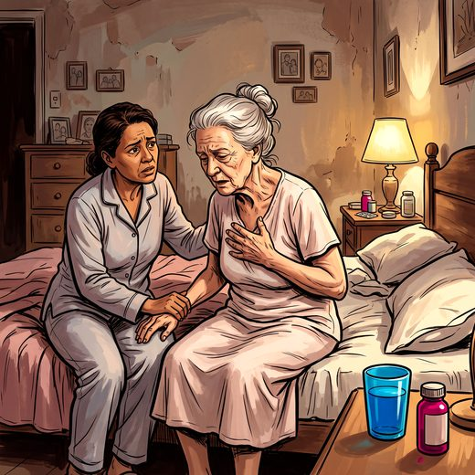

Consulta rápida à beira do leito
Condutas, doses e interações.
Referências da aula · 6
- 2023 American Geriatrics Society Beers Criteria® Update Expert Panel. American Geriatrics Society 2023 updated AGS Beers Criteria® for potentially inappropriate medication use in older adults. J Am Geriatr Soc. 2023;71(7):2052-81. PMID 37139824. doi:10.1111/jgs.18372.PubMedDOI
- Hui D, Bohlke K, Bao T, Campbell TC, Coyne PJ, Currow DC, et al. Management of dyspnea in advanced cancer: ASCO guideline. J Clin Oncol. 2021;39(12):1389-411. PMID 33617290. doi:10.1200/JCO.20.03465.PubMedDOI
- Parshall MB, Schwartzstein RM, Adams L, Banzett RB, Manning HL, Bourbeau J, et al. An official American Thoracic Society statement: update on the mechanisms, assessment, and management of dyspnea. Am J Respir Crit Care Med. 2012;185(4):435-52. PMID 22336677. doi:10.1164/rccm.201111-2042ST.PubMedDOI
- Bush SH, Lawlor PG, Ryan K, Centeno C, Lucchesi M, Kanji S, et al. Delirium in adult cancer patients: ESMO Clinical Practice Guidelines. Ann Oncol. 2018;29(Suppl 4):iv143-65. PMID 29992308. doi:10.1093/annonc/mdy147.PubMedDOI
- Agar MR, Lawlor PG, Quinn S, Draper B, Caplan GA, Rowett D, et al. Efficacy of oral risperidone, haloperidol, or placebo for symptoms of delirium among patients in palliative care: a randomized clinical trial. JAMA Intern Med. 2017;177(1):34-42. PMID 27918778. doi:10.1001/jamainternmed.2016.7491.PubMedDOI
- Chochinov HM, Wilson KG, Enns M, Lander S. “Are you depressed?” Screening for depression in the terminally ill. Am J Psychiatry. 1997;154(5):674-6. PMID 9137124. doi:10.1176/ajp.154.5.674.PubMedDOI
Documentos oficiais
Leis e publicações do Ministério da Saúde sobre o cuidado da pessoa idosa, de acesso livre.
Abrir os documentos